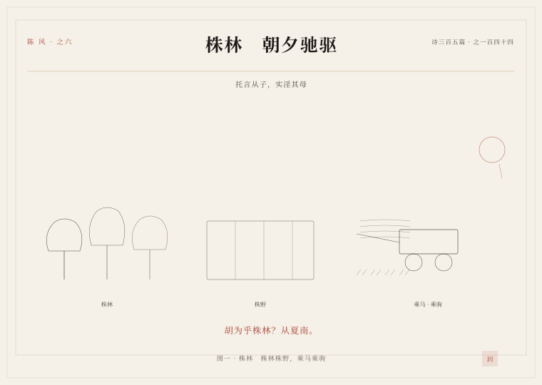
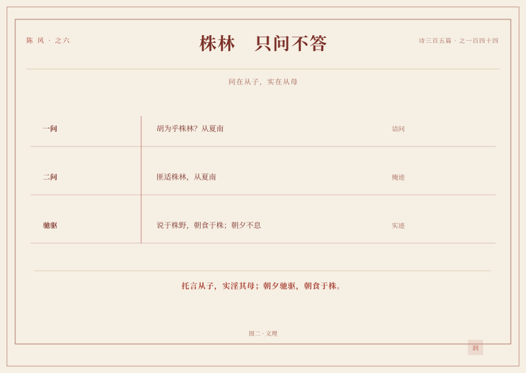

第一百四十四篇 株林
陈风 · 之九 SJ144
朗读 · 普通话
依经文原文朗读，章次不读出；配古琴底乐，不改速、不加拖腔。全库同一音色（豆包 TTS），非播音员录制。
一 解题
诗三判：
- 谁在说：陈国国人。见君上朝夕驱驰往夏氏之邑，托言从夏南；诗面只作诘问与相语，不直陈其事。
- 说什么事：一章两问两答：「胡为乎株林？」「从夏南。」「匪适株林，从夏南。」二章写驾车驰马、说息株野、朝食于株，朝夕不休息。所刺者淫泆无度，所妙者只问不答、以子掩母。
- 为何编在此：陈风至此，前有巫舞、会遇、怀思，此篇直刺灵公君臣之失。诗辞忠厚，其事已显；国人为之讽咏，陈之风俗与政事至此而极。
《毛序》：“《株林》，刺灵公也。淫乎夏姬，驱驰而往，朝夕不休息焉。”
朱子《诗集传》：“赋也。株林，夏氏邑也。夏南，徵舒字也。○灵公淫于夏徵舒之母，朝夕而往夏氏之邑。故其民相与语曰：君胡为乎株林乎？曰：从夏南耳。然则非适株林也，特以从夏南故耳。盖淫乎夏姬不可言也，故以从其子言之。诗人之忠厚如此。”
本库的看法：《株林》是一首诘问式讽刺诗：诗面只问不答，以「从夏南」掩「从夏姬」。
毛序、朱传同指灵公淫于夏姬；本库从毛、朱：事见《左传》，诗辞不指陈秽迹。
须辨：「夏南」是夏徵舒之字，不是地名，也不是夏姬本人；诗二章「说于株野」「朝食于株」写驰驱不息，是赋其事而非叙事传状。断语：托言从子，实淫其母；朝夕驰驱，朝食于株。
先辨五事：「株林」是夏氏之邑（株邑之林），不是树林泛称；「夏南」是徵舒字，不是地名；「匪」是非，不是匪盗；「说」是税息、休憩，不是言说；「乘马」之乘读去声，四马为乘，不是乘骑之乘。
二 经文
第一章
胡为乎株林？从夏南。
匪适株林，从夏南。
第二章
驾我乘马，说于株野。
乘我乘驹，朝食于株。
分章：二章，章四句。
三 韵读
- 一章：林、南、南，侵部；章内两「从夏南」重出，为收束之韵。
朱子叶「南，尼心反」。
- 二章：马、野，鱼部；驹、株，侯部；鱼侯旁通，朝食一句收于株邑。
读法：一章侵韵沉郁，问答往复；二章鱼侯相叶，驰驱不休；「株林／株野／株」三见地名，往返之地自见。
四 字义与名物
- 株林：夏氏邑名（株邑之林）。株野：株邑之野。朝食：早餐，犹言食朝。
- 夏南：夏徵舒，字子南；陈大夫，夏姬之子（毛传「夏南，夏徵舒也」；朱传「徵舒字也」；从毛、朱。）。
- 匪：非。适：往、到。从：跟随、造访。
- 乘马：四马之乘（一乘四马）。乘驹：乘驾车驹；上「乘」驾车之义，下「乘」四马之称。说：税也，休憩、止息。
五 今译
为什么要到株林去？说是去访夏南。并不是真为株林而去，说是去访夏南。
驾起我的四马大车，在株邑之野歇息。又乘上我的驹车，一早就在株邑进食。
六 章旨
- 一章：写问与答、非与故。一问「胡为」，一答「从夏南」；再申明「匪适株林」，托词之中事已可想。
- 二章：写马与驹、野与株。驾乘马而说息株野，乘乘驹而朝食于株；驰驱朝夕，不休息之状在行程里。
- 总收：一章以人口语作讽，二章以行程见迹；全诗不著一「淫」字，而淫泆不休自在言外。
七 诗教
- 兴：此篇为赋，不兴；直陈国人相与问答之辞，而讽刺自见。
- 观：观一国之讥如何借托词而出——不言夏姬而言夏南，不言淫泆而言朝食；托词越厚，讥意越冷。
- 群：国人相与语，君上不闻其直斥；众口在野，托于问答。
- 怨：怨在「朝食于株」一结；不谏争其君，所刺是朝夕不休息之失。
八 分寸与边界
- 不可把诗写成叙事传状，铺陈灵公与夏姬之事。诗面只问不答；一补叙秽迹，忠厚之讽就成了秽史。
- 不可把「夏南」误作地名。夏南是徵舒之字；一作地名，「从夏南」三字全失其解。
- 不可把「夏南」当作夏姬本人。托言从子，实从其母；一坐实夏南为夏姬，朱传「以从其子言之」之旨即失。
- 不可把「说于株野」读作言说于野。说是税息；一读成言说，休憩驰驱之意不明。
- 不可把二章车马写成夸耀车服之盛。所写是往返不息；一作盛饰，刺诗就成了车赋。
- 不可以诗面无「淫」字，遂疑毛序、朱传为附会。序传所指事见《左传》；事为背景，辞为诗面，两层不相乱。
九 存疑
- 诗旨：毛序、朱传皆刺灵公淫乎夏姬；后世或有以为只写往返邑地、不涉淫事者。本库从毛、朱，事为背景。
- 「夏南」所指：毛传以为徵舒；一说「夏南」即夏姬（夏氏之南子？）。从徵舒字子南之说。
- 「乘驹」：上乘字读chéng（驾车）还是shèng（四驹），旧读不一；两存，诗面不碍。
- 朝食：或以为早餐，或以为「朝食」即男女私会之隐语。从早餐息食，隐语之说存疑。
- 年代与作者：诗作于灵公之世或事后追讽，作者为国人中何人，诗中无征。
- 编次：此篇居陈风第九，与《泽陂》相次；一刺君上，一伤国人，编次之意旧说未详。
十 跨典
- 《左传·宣公九年》：“陈灵公与孔宁、仪行父通于夏姬，皆衷其衵服，以戏于朝。”——灵公君臣淫乱之事，毛序所指；诗不指此事，事为诗之背景。
- 《左传·宣公十年》：“公谓行父曰：徵舒似女。对曰：亦似君。徵舒病之。公出，自其厩射而杀之。”——夏南（徵舒）之终；朝食于株之往返，伏后日弑君之祸。
- 《左传·宣公十一年》：“楚为陈夏氏乱故，伐陈……因县陈。”——淫乱致亡之效；陈风刺诗至此，见国势之将倾。
- 《礼记·乐记》：“世乱则礼慝而乐淫，是故其声哀而不庄，乐而不安。”——世风淫泆则礼乐俱弛；陈风诸篇，正是礼慝乐淫之征。
- 《诗经·陈风·墓门》（SJ141）：「夫也不良，国人知之」；前篇刺不良之不改，此篇刺灵公之不息，陈风两刺相发。
十一 双卡与图
六对：
| 株林（夏氏邑名） |
株林（树林泛称） |
| 夏南（徵舒之字） |
夏南（地名／夏姬本人） |
| 匪（非） |
匪（匪盗） |
| 说（税息休憩） |
说（言说） |
| 乘马（四马之乘） |
乘马（乘骑） |
| 只问不答（诘问式讽） |
直陈其事（叙事传状） |

图一 · 株林 株林株野，乘马乘驹

图二 · 株林 胡为乎株林，匪适株林
读图三处：
- 邑野行程：图一株邑轮廓一线，林野两道，车马只画辔与蹄迹，不画马身；人不画面目。
- 问答两叠：图二「胡为乎株林／从夏南／匪适株林／从夏南」四行相次，问句与答语分列；夏姬不画，夏南只作虚位。
- 朱线一结：图二末行朱线收在「朝食于株」；全篇不著秽事，红只落在往返不息一结。